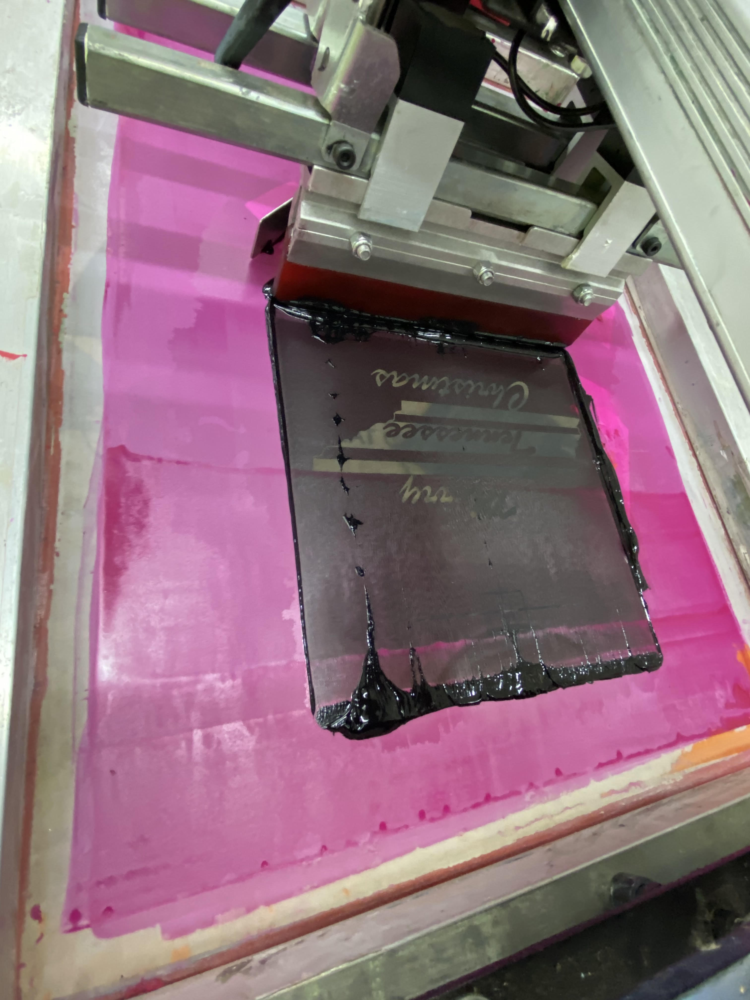
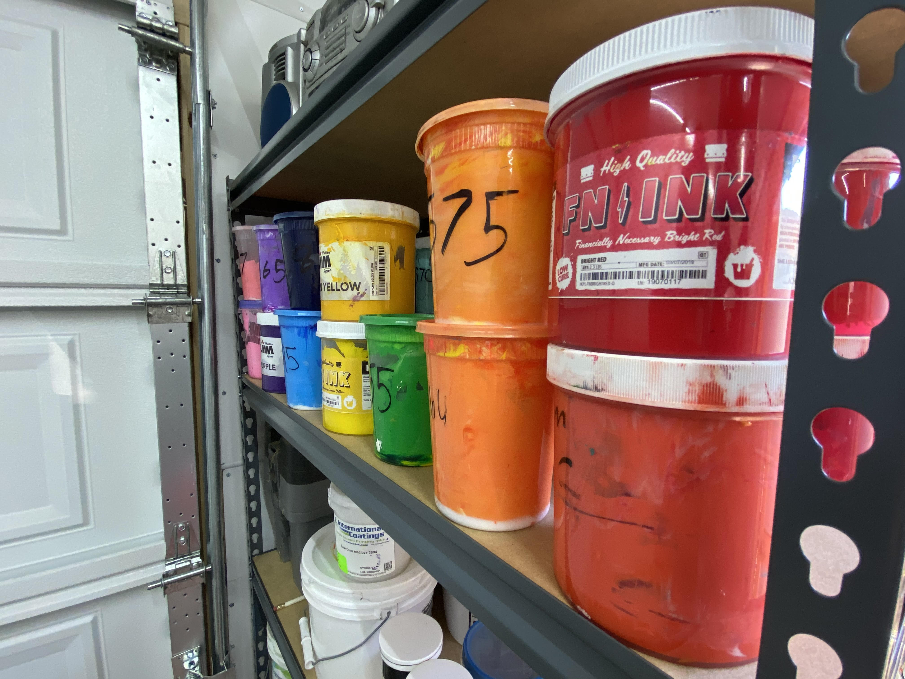
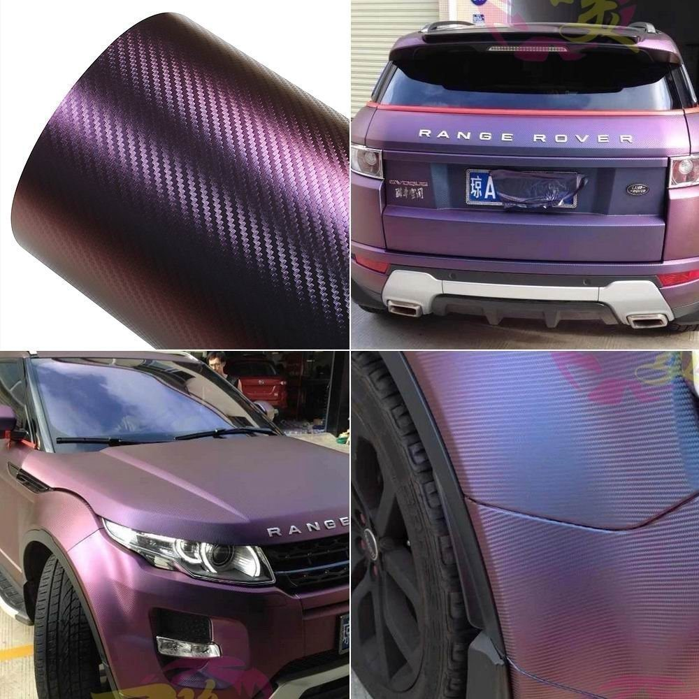

Welcome to Kilby Custom Designs
Screen printing is a printing technique where a mesh is used to transfer ink onto a substrate, except in areas made impermeable to the ink by a blocking stencil. A blade or squeegee is moved across the screen to fill the open mesh apertures with ink, and a reverse stroke then causes the screen to touch the substrate momentarily along a line of contact. This causes the ink to wet the substrate and be pulled out of the mesh apertures as the screen springs back after the blade has passed. One colour is printed at a time, so several screens can be used to produce a multi-coloured image or design.
videos
Stuff that we will be doing
Screen printing
Wraps on Cars
♦ The Dark room ♦
Your darkroom is a vital part of your screen printing shop. You’ll spend countless hours inside the space prepping screens for printing. A well set-up darkroom with the necessary UV-blocking properties, UV-free light and dry air will help you turn well-prepped screens into hearty, effective screen-printing stencils.
.jpg)